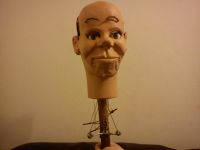

Storyteller figure
4/26/2012
{kind=link}

Question: I hope you can give me some pictures of what my Lovik figure used to look like. This figure is 1972-73....it has raising eyebrows, winkers, and moving living mouth. My dad and I are trying to restore it. Do you have a colored picture of it from then? Adam* * * * *
From Mr. D: Somewhere I'm pretty sure I have a copy of the one and only ad page showing the half dozen or so Storyletter figures. But I cannot find it at the moment. I can tell you the photos were all black and white. As far as I know, no color photos from that era exist. And the Storyteller figures were only produced for a period of two years, or so. They were soon replaced with a line of figures Lovik called "The Talk-alots".
The wigs used on the Storyteller figures were lady's wigs of the day, cut to size and restyled. No two ever looked the same, so feel free to be creative when you replace the wig. I do not remember the name for the character you have - sorry. I should give you a caution for repainting...be very sparing with the paint used on the leather mouth. I generally try to get by with one very thin coat, mixing "textile medium" into the latex paint applied to that area to retain flexibility.
I did write more about the Storyteller figures on a post 3/30/09: http://ventdj.blogspot.com/2009/03/storyteller-figures.html